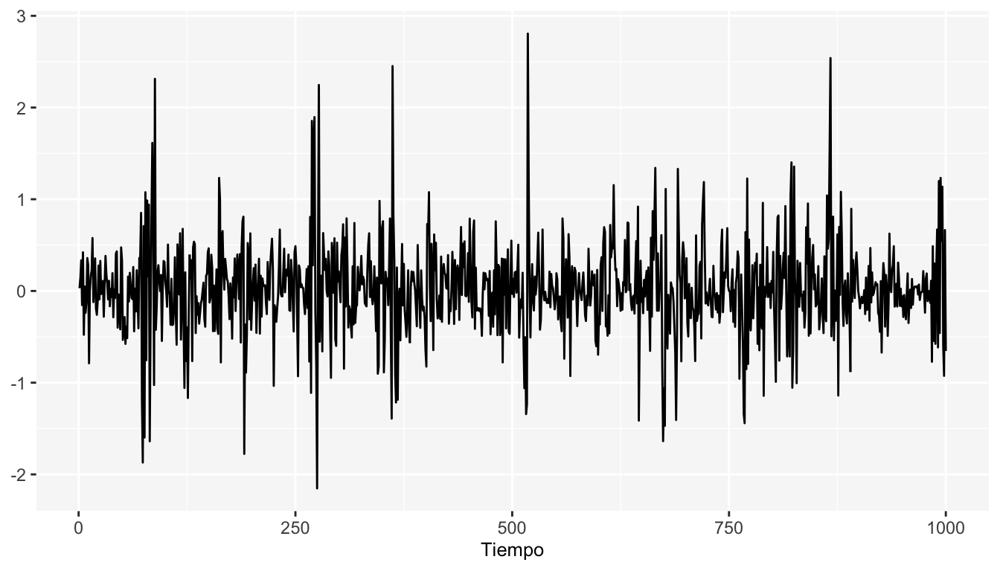
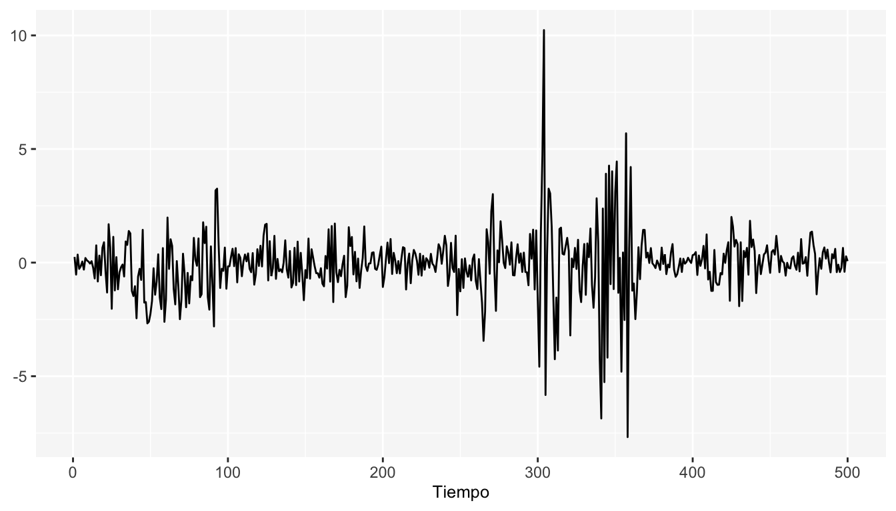

Capítulo 14 \(ARCH(q)\): Proceso Autoregresivo con Heterocedasticidad Condicional
El nombre proviene del inglés, “Autoregressive conditional heteroscedasticity” (ARCH). Métodp propuesto por Engels en 1982, que determina un patrón de comportamiento estadístico para la varianza. Considera que la información pasada de una variable y su volatilidad son factores que explican su comportamiento presente y, por tanto, podrá ser extrapolado a futuro.
La expresión algebráica básica del proceso \(ARCH(r)\) es:
\[ X_t=\sigma_{t}\epsilon_{t} \] Donde \(\epsilon_{t}\) (proceso de ruido blanco formado por variables aleatorias normales independientes de media cero y varianza uno) y \(\sigma_{t}\) (factor denominado volatilidad) son procesos estacionarios independientes entre sí. La condición de independencia entre \(\epsilon_{t}\) y \(\sigma_{t}\), garantiza que la serie \(X_t\) tenga media marginal igual a cero: \[ E(X_{t})=E(\sigma_{t}\epsilon_{t})=E(\sigma_{t})E(\epsilon_{t})=0 \] La media condicional también es nula. \[ E(X_{t}|X_{t-1})=E(\sigma_{t}\epsilon_{t}|X_{t-1})=E(\sigma_{t}|X_{t-1})E(\epsilon_{t}|X_{t-1})=E(\sigma_{t}|X_{t-1})E(\epsilon_{t})=0 \] La varianza marginal de \(X_{t}\) es constante (\(\sigma^2\)) y se calcula como: \[ E(X_{t}^2)=E(\sigma_{t}^2\epsilon_{t}^2)=E(\sigma_{t}^2)E(\epsilon_{t}^2)=\sigma^2\times1=\sigma^2 \] Sin embargo, la varianza condicionada no es constante: \[ E(X_{t}^2|X_{t-1})=E(\sigma_{t}^2\epsilon_{t}^2|X_{t-1})=E(\sigma_{t}^2|X_{t-1})E(\epsilon_{t}^2|X_{t-1})=E(\sigma_{t}^2|X_{t-1})E(\epsilon_{t}^2)=\sigma_t^2\times1=\sigma_t^2 \] Por tanto, \(\sigma_t^2\), representa la varianza condicionada de la serie en cada instante , que va variando con cierta estructura estacionaria.
La condición de independencia entre \(\sigma_t\) y \(\epsilon_t\), además de garantizar que la serie \(X_t\) tenga media marginal igual a cero, nos garantiza que la serie carezca de autocorrelación y forme un proceso de ruido blanco. Sin embargo, la serie \(X_t\) no es de variables independientes.
El casos más simple de este proceso es un modelo ARCH(1) (la varianza condicional depende de un retardo de la serie) y se define como:
Un proceso estacionario \(X_t\) sigue un modelo \(ARCH(1)\) si y sólo si \[ X_t=\sigma_t\epsilon_t \] donde \(\epsilon_t\) es ruido blanco y
\[ \sigma^2_{t} = \alpha_0+\alpha_1 X^2_{t-1} \] Observemos que la varianza condicional (\(\sigma^2_t\)) tiene una estructura similar a un AR(1), y por tanto solo depende del último valor observado. Por tanto, si el valor de \(X^2_t\) es alto, la varianza \(\sigma^2_t\) de la siguiente observación condicionada a este valor será también alta. Esto producirá correlación entre los cuadrados de la serie, provocando rachas de valores de magnitud relativamente elevada o con mayor varianza. Pero como la media marginal y la condicionada vale cero, aunque la varianza condicionada sea alta, siempre es posible que aparezca un valor pequeño de \(X^2_t\), que disminuirá la varianza condicionada de la observación siguiente y facilitará que la siguiente observación sea pequeña en valor absoluto. De manera que la serie puede presentar rachas de valores altos, pero globalmente será estacionaria.
El modelo anterior puede generalizarse permitiendo una dependencia de la varianza condicional con q retardos. De manera que el modelo será \(ARCH(q)\), el cual se define como:
Un proceso estacionario \(X_t\) sigue un modelo \(ARCH(q)\) si y sólo si \[ X_t=\sigma_t\epsilon_t \] donde \(\epsilon_t\) es ruido blanco y
\[ \sigma^2_{t} = \alpha_0+\alpha_1 X^2_{t-1}+\alpha_2 X^2_{t-2}+...+\alpha_q X^2_{t-q}= \alpha_0+\sum_{i=1}^q \alpha_i X^2_{t-i} \] Donde \(\alpha_0>0\) y \(\alpha_i\ge0, i=1,...,q\). Para garantizar que el proceso \(\sigma^2_t\) sea estacionario se requiere que \(\sum_{i=1}^q\alpha_i<1\).
A continuación se muestran las simulaciones de un modelo \(ARCH(1)\) con la varianza modelada de la siguiente forma: \(\sigma^2_{t}=0.05+ 0.8X_{t-1}\)

A continuación se muestran las simulaciones de un modelo \(ARCH(3)\) con la varianza modelada de la siguiente forma: \(\sigma^2_{t}=0.05+ 0.6X_{t-1}+0.2X_{t-2}+0.1X_{t-3}\) 